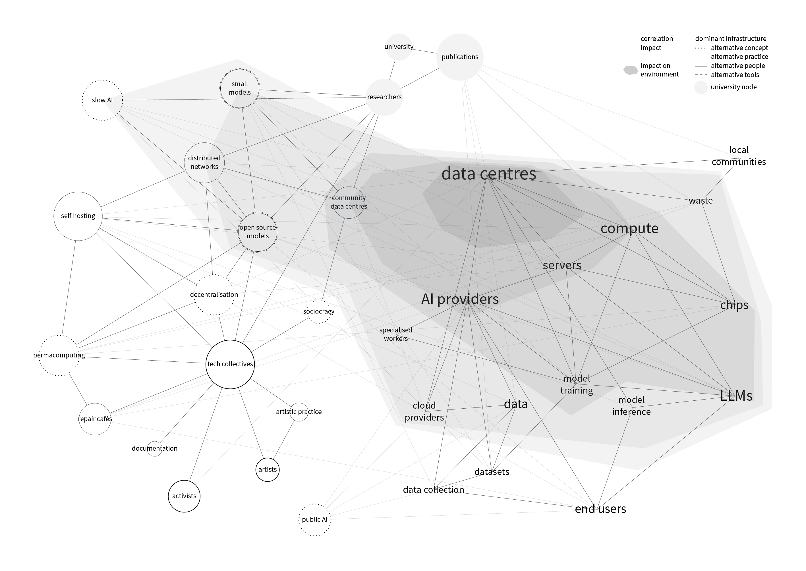
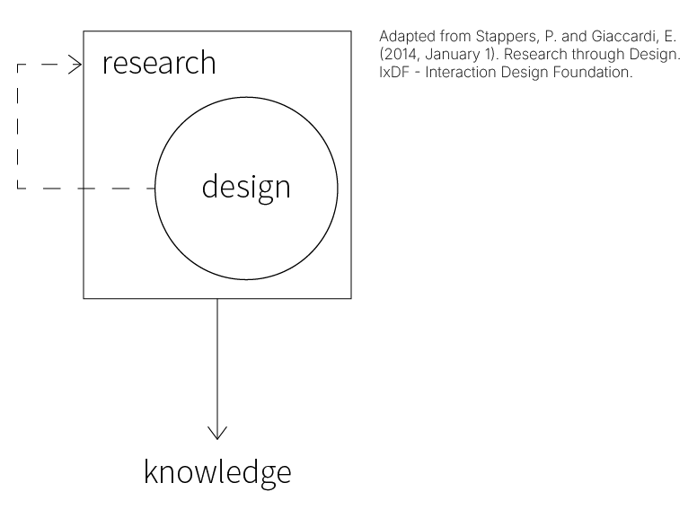

RESEARCH QUESTION
How can alternative digital practices contribute to the democratisation of the dominant infrastructure of the AI industry?
DESIGN METHODS
ethnographic research, system mapping, AI prototyping, video editing, academic writing
ABSTRACT
This 5-month research project frames the debate around AI infrastructure as a socio-technical controversy, contrasting the antidemocratic tendencies of the dominant infrastructure in the AI industry with community-driven alternatives. By engaging with local tech collectives and practitioners, the project highlights social desirability and the public good as novel criteria for technological development and outlines four fundamental democratic purposes that underpin alternative practices: self-determination, participation, reflexivity and sustainability. Collectivity and social friction are the common threads running through all of them. Rather than hiding it away, alternative digital infrastructures embrace friction as a generative resource that fosters critical thinking, collective negotiation and human relationships. Ultimately, the research concludes that the democratisation of AI is not solely a technical challenge, but a socio-technical process grounded in collective care. It suggests that meaningful alternatives emerge when technological progress is recentred around human relationships and social desirability rather than the market-driven imperatives of scale and efficiency.

METHODOLOGY
The project combines traditional research methods, such as literature reviews and ethnographic activities, with the iterative creation of design artefacts to reframe and enhance research findings.

3D INTERACTIVE MAP
A major outcome of this research is a design intervention in the form of an interactive 3D actor-network map. This digital prototype visualises the interconnections between the dominant AI infrastructure and the fragmented landscape of alternative practices, serving as a tool for knowledge sharing, solidarity, and further research. Its effectiveness as a research tool was assessed through a short round of evaluation sessions with research participants, suggesting its potential to support the debate exploration.
explore the prototype
->
Impact of Alternatives
VIDEO SHOCASE
This 4-minute video attempts to present the entire project, from the initial research into the issues and threats of the dominant AI infrastructure to the ethnographic research into alternatives, alongside the continuous mapping work that culminated in the development of the prototype.
Edited in Adobe Premiere Pro, animated in Adobe After Effects.
more details here
-> Thesis report